Publications
Peer-reviewed
scroll for paper previews
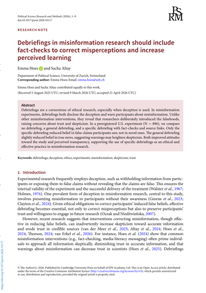
Debriefings in Misinformation Research…
Scientific Reports · forthcoming
Quality Perceptions and Intended Engagement in Response to AI-Generated and AI-Assisted News
Quality Perceptions and Intended Engagement…
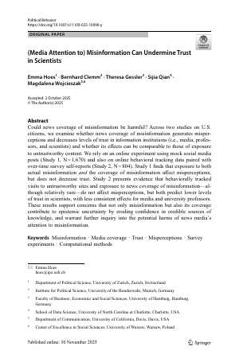
(Media Attention to) Misinformation…
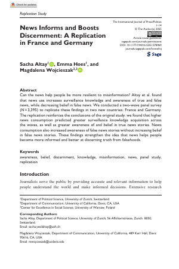
News Informs and Boosts Discernment…
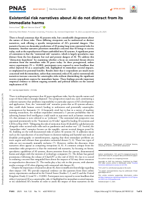
Existential Risk Narratives About AI…
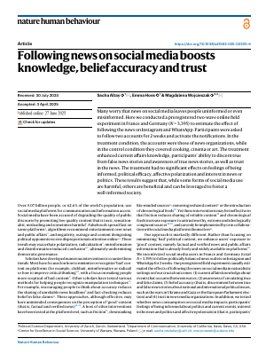
News on Social Media Boosts Knowledge…
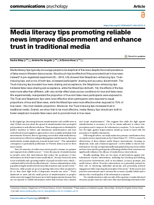
Media Literacy Tips Promoting Reliable News…
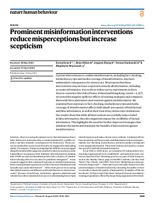
Prominent Misinformation Interventions…
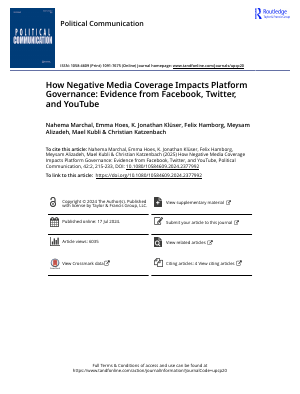
The Role of Media Coverage in Platform Policy Change
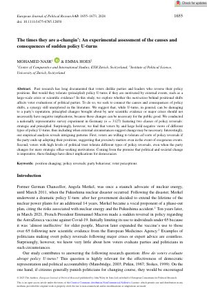
The Times They Are A-Changing…
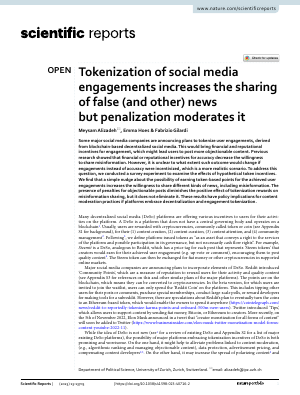
Tokenization of Social Media Engagements…
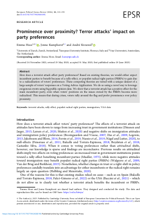
Prominence over Proximity?…
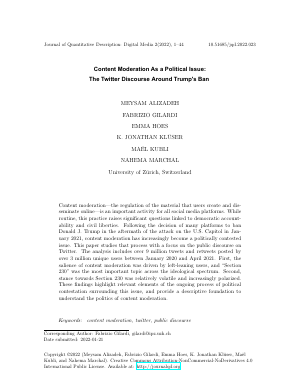
Content Moderation as a Political Issue…
* denotes equal contribution
2026Hoes, E. & Altay, S. Debriefings in Misinformation Research Should Include Fact-Checks to Correct Misperceptions and Increase Perceived Learning. Political Science Research and Methods. link forthcoming
2026Gilardi, F., Di Lorenzo, S., Ezzaini, J., Santa, B., Streiff, B., Zurfluh, E., & Hoes, E. Quality Perceptions and Intended Engagement in Response to AI-Generated and AI-Assisted News. Scientific Reports. link forthcoming
2025Hoes, E., Clemm von Hohenberg, B., Gessler, T., Qian, S., & Wojcieszak, M. (Media Attention to) Misinformation Can Undermine Trust in Scientists. Political Behavior. link
2025Altay, S., Hoes, E., & Wojcieszak, M. News Informs and Boosts Discernment: A Replication in France and Germany. International Journal of Press/Politics. link
2025Hoes, E. & Gilardi, F.* Existential Risk Narratives About Artificial Intelligence Do Not Distract From Its Immediate Harms. PNAS. link
2025Altay, S., Hoes, E., & Wojcieszak, M.* News on Social Media Boosts Knowledge, Belief Accuracy, and Trust: A Field Experiment on Instagram and WhatsApp. Nature Human Behaviour. link
2024Altay, S., de Angelis, A., & Hoes, E.* Media Literacy Tips Promoting Reliable News Improve Discernment and Enhance Trust in Traditional Media. Communications Psychology, 2(74). link
2024Hoes, E., Aitken, B., Gackowski, T., Zhang, J., & Wojcieszak, M. Prominent Misinformation Interventions Reduce Misperceptions but Increase Skepticism. Nature Human Behaviour, 1–9. link
2024Marchal, N., Hoes, E., Klüser, K. J., Hamborg, F., Katzenbach, C., Alizadeh, M., & Kubli, M. The Role of Media Coverage in Platform Policy Change. Political Communication, 1–19. link
2023Nasr, M. & Hoes, E. The Times They Are A-Changing: An Experimental Assessment of the Causes and Consequences of Sudden Policy U-turns. European Journal of Political Research. link
2023Alizadeh, M., Hoes, E., & Gilardi, F.* Tokenization of Social Media Engagements Increases the Sharing of False (and Other) News but Penalization Moderates It. Scientific Reports, 13. link
2023Hoes, E., Kamphorst, J., & Krouwel, A. Prominence over Proximity? The Effects of Terrorist Attacks on Party Preferences for Incumbent versus Populist Radical Right Parties. European Political Science Review, 1–19. link
2022Alizadeh, M., Gilardi, F., Hoes, E., Klüser, K. J., Kubli, M., & Marchal, N.* Content Moderation as a Political Issue: The Twitter Discourse Around Trump's Ban. Journal of Quantitative Description: Digital Media, 2. link
Book chapters
Book chapters
2027Hoes, E. Trust Erosion in the Digital Age. In M. M. Torres (Ed.), Public Trust in Institutions: Qualitative and Quantitative Perspectives. Elsevier. forthcoming
2022Hoes, E. De Media en Politieke Polarisatie: De Rol van Ons Gedrag. In P. Dekker (Ed.), Politieke Polarisatie in Nederland (Ch. 9). Het Wereldvenster.
Working papers
In progress & under review
scroll for working-paper previews
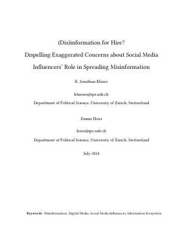
(Dis)information for Hire?…
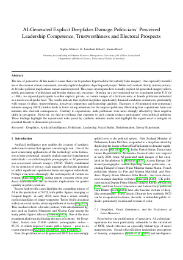
AI-Generated Explicit Deepfakes…
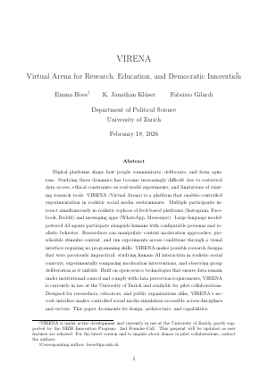
VIRENA: Virtual Arena for Research…
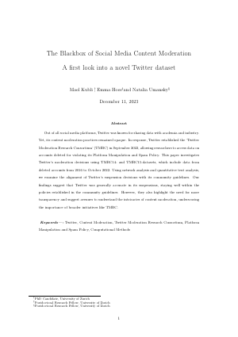
The Blackbox of Social Media Content Moderation
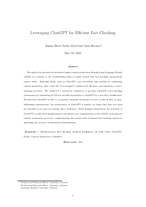
Leveraging ChatGPT for Efficient Fact-Checking
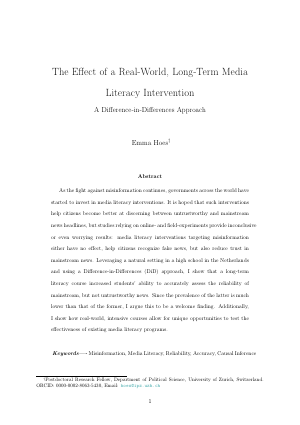
The Effect of a Real-World, Long-Term Media Literacy Intervention
(Dis)information for Hire? Dispelling Exaggerated Concerns about Social Media Influencers' Role in Spreading Misinformation — with K. Jonathan Klüser
AI-Generated Explicit Deepfakes Damage Politicians' Perceived Leadership Competence, Trustworthiness and Electoral Prospects — with Sophie Klüser and K. Jonathan Klüser
VIRENA: Virtual Arena for Research, Education, and Democratic Innovation — with K. Jonathan Klüser and Fabrizio Gilardi
The Blackbox of Social Media Content Moderation: A First Look into a Novel Twitter Dataset — with Maël Kubli and Natalia Umansky
Leveraging ChatGPT for Efficient Fact-Checking — with Sacha Altay and Juan Bermeo
Teaching
Teaching, workshops & supervision
Bachelor courses
'25/'26
Agenda Setting and the Media: Framing the Political Debate (Bachelor specialisation) · University of Zurich
'24/'25
Agenda Setting and the Media: Framing the Political Debate (Bachelor specialisation) · University of Zurich
Master courses
Spring 2026
(Fake) News & What (Not) To Do About It · University of Zurich
Spring 2025
(Fake) News & What (Not) To Do About It · University of Zurich
Spring 2023
(Fake) News & What (Not) To Do About It · University of Zurich
Spring 2022
(Fake) News & What (Not) To Do About It · University of Zurich
Workshops
Sep 2026
Experimental Design and Open Science · ECPR Methods School
Fall 2025
Digital Skills Workshop: Experimental (Survey) Methods in Social Sciences (Master & PhD) · University of Lucerne
Spring 2024
From Dream to Draft: Converting Ideas to Text with a Compelling Start (PhD) · University of Zurich
Supervision
I supervise students at both the BA and MA level. To date I have supervised 3 MA students and 19 BA students. One of my BA supervisees received the Department of Political Science's Best Bachelor Thesis award (University of Zurich, 2025).
Contact
Get in touch
Email is the best way to reach me: hoes@ipz.uzh.ch
Department of Political Science
University of Zurich
Affolternstrasse 56
8050 Zurich, Switzerland
University of Zurich
Affolternstrasse 56
8050 Zurich, Switzerland